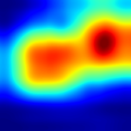
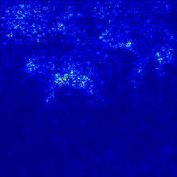
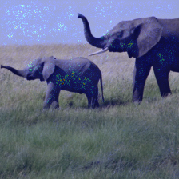

models¶
- trojanvision.models.add_argument(parser, model_name=None, model=None, config=config, class_dict=class_dict)[source]¶
- Add image model arguments to argument parser.For specific arguments implementation, see
ImageModel.add_argument().- Parameters:
parser (argparse.ArgumentParser) – The parser to add arguments.
model_name (str) – The model name.
model (str | ImageModel) – Model instance or model name (as the alias of model_name).
config (Config) – The default parameter config, which contains the default dataset and model name if not provided.
class_dict (dict[str, type[ImageModel]]) – Map from model name to model class. Defaults to
trojanvision.models.class_dict.
See also
- trojanvision.models.create(model_name=None, model=None, dataset_name=None, dataset=None, config=config, class_dict=class_dict, **kwargs)[source]¶
- Create a model instance.For arguments not included in
kwargs, use the default values inconfig.The default value offolder_pathis'{model_dir}/{dataset.data_type}/{dataset.name}'.For model implementation, seeImageModel.- Parameters:
model_name (str) – The model name.
model (str | ImageModel) – The model instance or model name (as the alias of model_name).
dataset_name (str) – The dataset name.
dataset (str | trojanvision.datasets.ImageSet) – Dataset instance or dataset name (as the alias of dataset_name).
config (Config) – The default parameter config.
class_dict (dict[str, type[ImageModel]]) – Map from model name to model class. Defaults to
trojanvision.models.class_dict.**kwargs – Keyword arguments passed to model init method.
- Returns:
ImageModel – The image model instance.
See also
- trojanvision.models.output_available_models(class_dict=class_dict, indent=0)[source]¶
Output all available model names.
- Parameters:
class_dict (dict[str, type[ImageModel]]) – Map from model name to model class. Defaults to
trojanvision.models.class_dict.indent (int) – The space indent for the entire string. Defaults to
0.
- class trojanvision.models.ImageModel(name='imagemodel', layer='', model=_ImageModel, dataset=None, data_shape=None, adv_train=None, adv_train_random_init=False, adv_train_eval_random_init=None, adv_train_iter=7, adv_train_alpha=2 / 255, adv_train_eps=8 / 255, adv_train_eval_iter=None, adv_train_eval_alpha=None, adv_train_eval_eps=None, adv_train_trades_beta=6.0, norm_layer='bn', sgm=False, sgm_gamma=1.0, norm_par=None, suffix=None, modify_first_layer_channel=True, **kwargs)[source]¶
- A basic image model wrapper class, which should be the most common interface for users.It inherits
trojanzoo.models.Modeland further extend adversarial training and Skip Gradient Method (SGM).See also
Adversarial Training:
Skip Gradient Method: https://github.com/csdongxian/skip-connections-matter
- Parameters:
layer (int | str) – Default layer when it’s not provided in
name. Defaults to''.- Variables:
pgd (trojanvision.attacks.PGD) – PGD attacker using eval settings without early stop. It’s only constructed when
adv_trainis notNone.adv_train (str | None) –
Adversarial training strategy. Choose from
[None, 'pgd', 'free', 'trades']. Defaults toNone.Note
If
adv_train is not None and suffix is None, setsuffix = f'_at-{adv_train}'.adv_train_random_init (bool) – Whether to random initialize adversarial noise using normal distribution with
adv_train_eps. Otherwise, attack starts from the benign inputs. Defaults toFalse.adv_train_iter (int) – Adversarial training PGD iteration. Defaults to
7.adv_train_alpha (float) – Adversarial training PGD alpha. Defaults to .
adv_train_eps (float) – Adversarial training PGD eps. Defaults to .
adv_train_eval_iter (int) – Adversarial training PGD iteration at evaluation. Defaults to
adv_train_iter.adv_train_eval_alpha (float) – Adversarial training PGD alpha at evaluation. Defaults to
adv_train_alpha.adv_train_eval_eps (float) – Adversarial training PGD eps at evaluation. Defaults to
adv_train_eps.adv_train_trades_beta (float) – regularization factor ( in TRADES) Defaults to
6.0.norm_layer (str) – The normalization layer type. Choose from
['bn', 'gn']. Defaults to['bn'].sgm (bool) – Whether to use Skip Gradient Method. Defaults to
False.sgm_gamma (float) – The gradient factor used in SGM. Defaults to
1.0.
- classmethod add_argument(group)[source]¶
Add image model arguments to argument parser group. View source to see specific arguments.
Note
This is the implementation of adding arguments. The concrete model class may override this method to add more arguments. For users, please use
add_argument()instead, which is more user-friendly.
- get_data(data, adv_train=False, **kwargs)[source]¶
- Parameters:
data (tuple[torch.Tensor, torch.Tensor]) – Tuple of
(input, label).adv_train (bool) – Whether to Defaults to
False.**kwargs – Keyword arguments passed to
trojanzoo.models.Model.get_data().
- get_heatmap(_input, _label, method='grad_cam', cmap=jet, mode='bicubic')[source]¶
Use colormap
cmapto get heatmap tensor of_inputw.r.t._labelwithmethod.- Parameters:
_input (torch.Tensor) – The (batched) input tensor with shape
([N], C, H, W)._label (torch.Tensor) – The (batched) label tensor with shape
([N])method (str) – The method to calculate heatmap. Choose from
['grad_cam', 'saliency_map']. Defaults to'grad_cam'.cmap (matplotlib.colors.Colormap) – The colormap to use.
mode (str) – Passed to
torch.nn.functional.interpolate. Defaults to'bicubic'.
- Returns:
torch.Tensor – The heatmap tensor with shape ([N], C, H, W).
Note
Most
matplotlib.colors.Colormapwill return a 4-channel heatmap with alpha channel.- Example:
import trojanvision from trojanvision.utils import superimpose import torchvision import torchvision.transforms as transforms import PIL.Image as Image import os import wget env = trojanvision.environ.create(device='cpu') model = trojanvision.models.create( 'resnet152', data_shape=[3, 224, 224], official=True, norm_par={'mean': [0.485, 0.456, 0.406], 'std': [0.229, 0.224, 0.225]}) transform = transforms.Compose([ transforms.Resize(256), transforms.CenterCrop(224), transforms.PILToTensor(), transforms.ConvertImageDtype(torch.float)]) url = 'https://i.imgur.com/Bvro0YD.png' if not os.path.isfile('african_elephant.png'): wget.download(url, 'african_elephant.png') img = Image.open('african_elephant.png').convert(mode='RGB') _input = transform(img).unsqueeze(0).to(env['device']) _prob = model.get_prob(_input).squeeze() label = _prob.argmax().item() conf = _prob[label].item() print(f'{label=:} {conf=:.2%}') grad_cam = model.get_heatmap(_input, label)[:, :3] saliency_map = model.get_heatmap(_input, label, method='saliency_map')[:, :3] grad_cam_impose = (grad_cam * 0.4 + _input) saliency_map_impose = (saliency_map * 0.4 + _input) grad_cam_impose = grad_cam_impose.div(grad_cam_impose.max()) saliency_map_impose = saliency_map_impose.div(saliency_map_impose.max()) torchvision.utils.save_image(_input, './center_cropped.png') torchvision.utils.save_image(grad_cam, './grad_cam.png') torchvision.utils.save_image(saliency_map, './saliency_map.png') torchvision.utils.save_image(grad_cam_impose, './grad_cam_impose.png') torchvision.utils.save_image(saliency_map_impose, './saliency_map_impose.png')
label=386 conf=77.74%original

grad_cam

saliency_map

